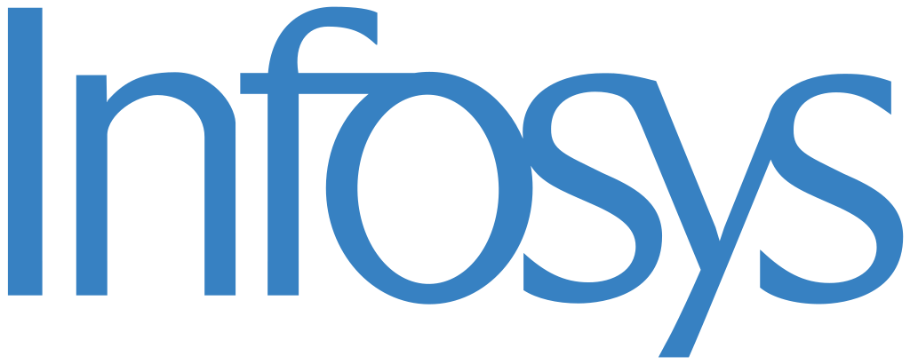

Professional Experience
Professional experience in API development, python development, automation, data processing and inferencing in DB using SQL, with background in software engineering and data analysis.
Takeda Pharmaceutical
Role : Digital Innovation – Intern
During my tenure at Takeda Pharmaceutical, I led the creation of a report comparison tool that streamlined collaboration across multiple cross-functional teams, resulting in enhanced data accuracy and operational efficiency. I utilized Python to engineer automated processes that reduced data processing times by 50%, while leaving room for future scalability and potential integration with cloud environments. This innovation not only optimized current workflows but also set a precedent for broader application across manual tasks within the GRO division. My efforts were rooted in analyzing post-market pharmaceutical data, where I engaged with industry data standards, leveraging Snowflake to derive data-driven insights. This hands-on experience fostered a deep understanding of data compliance and the importance of standardization within the pharmaceutical sector.

Sysco Corporation (through Infosys LTD)
Role : Specialist Programmer
At Sysco, I engineered a REST API in Python using AWS Lambda, improving system responsiveness and integrating various AWS services to achieve a 15% boost in performance. My work extended to developing machine learning models in Databricks using PySpark and SQL, resulting in a 25% increase in data processing efficiency and faster delivery of customer insights. I led the implementation of a data pipeline within Microsoft Azure, which significantly improved data accessibility by 25%. My technical contributions were coupled with strong stakeholder management and business requirement analysis, ensuring all solutions met operational and strategic objectives. I managed this project using Agile methodologies while also adapting resource management techniques across the SDLC, contributing to a smooth, iterative development process.
British Petroleum (through Infosys LTD)
Role : Analyst
At BP, I led the automation efforts for both UI and API testing using the Robot framework in Python, driving a 40% reduction in manual testing efforts. I designed a modular automation framework that integrated across systems, streamlining testing workflows and cutting deployment times by 30%. In a data migration project, I utilized API automation to ensure compliance with governance standards, reducing staffing needs by 66% while improving data accuracy. Throughout these projects, I was actively involved in business requirement analysis, resource management, and communication with stakeholders, leveraging Agile and Scrum methodologies to manage competing priorities efficiently. My leadership and proactive engagement in the development cycle earned me recognition and awards for conflict resolution and stakeholder management.
Southern California Edison (through Infosys LTD)
Role : Test Engineer & System Engineer
At Southern California Edison, I spearheaded the development of a Python-based tool that automated execution processes in HP/ALM through REST API, reducing manual effort from 20 minutes to just 15 seconds. This automation drastically minimized technical debt while streamlining workflow processes. I also played a key role in the automation of UI and API testing using the Robot framework, improving test accuracy and expanding coverage. My expertise in Agile and Scrum models was central to ensuring effective collaboration with cross-functional teams. Additionally, I led business requirement analysis sessions and managed stakeholder expectations, ensuring project milestones aligned with organizational objectives. Through resource management and leveraging the Waterfall model when appropriate, I contributed to enhancing system reliability to 99%, ensuring the delivery of high-quality software products.